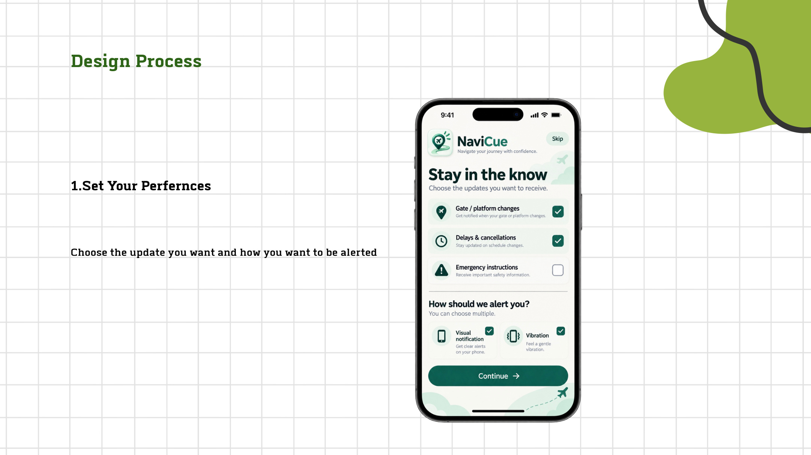
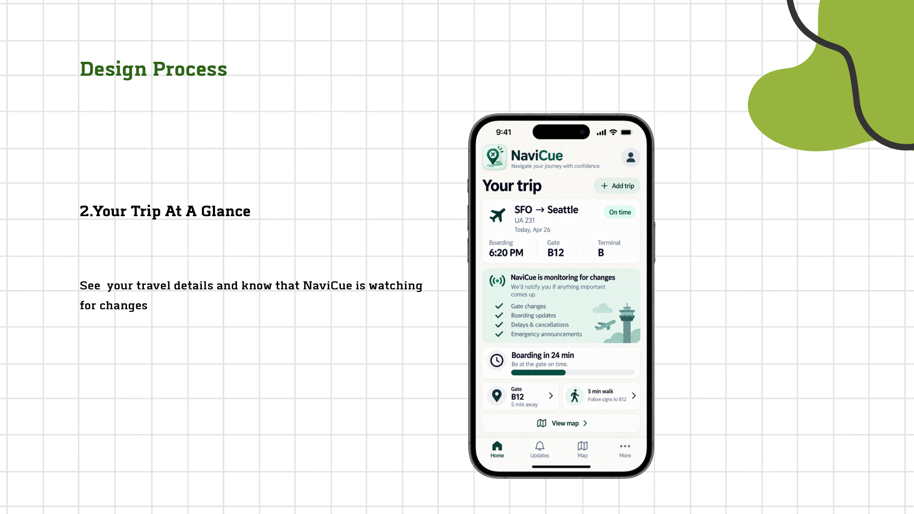
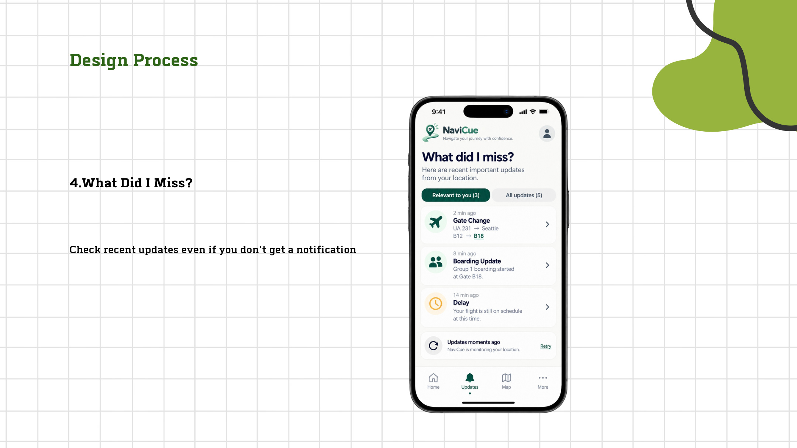

CASE STUDY
NaviCue
Accessibility-focused travel companion
THE PROBLEM
Understanding the gap
Deaf and hard-of-hearing travelers may successfully reach a public place while still missing important verbal changes such as gate changes, emergency instructions, or staff directions.
THE DIRECTION
Designing the response
The concept surfaces relevant trip changes through personalized visual and haptic alerts, with a trip dashboard, clear next steps, and a recent-updates feed.




NEXT PROJECT
Explore all work →